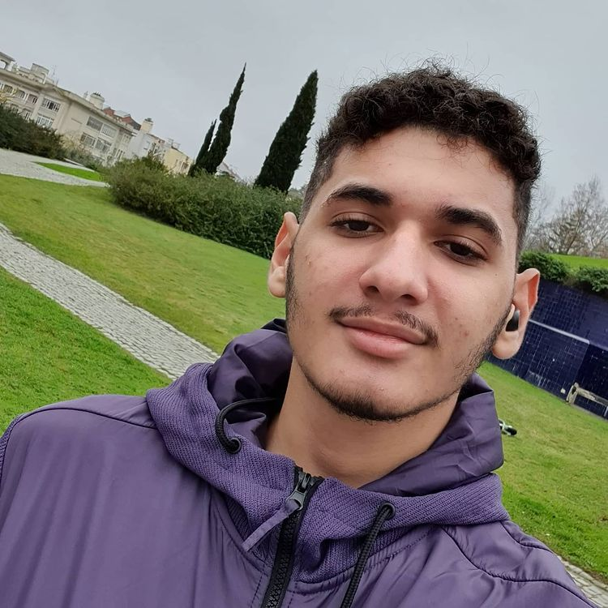
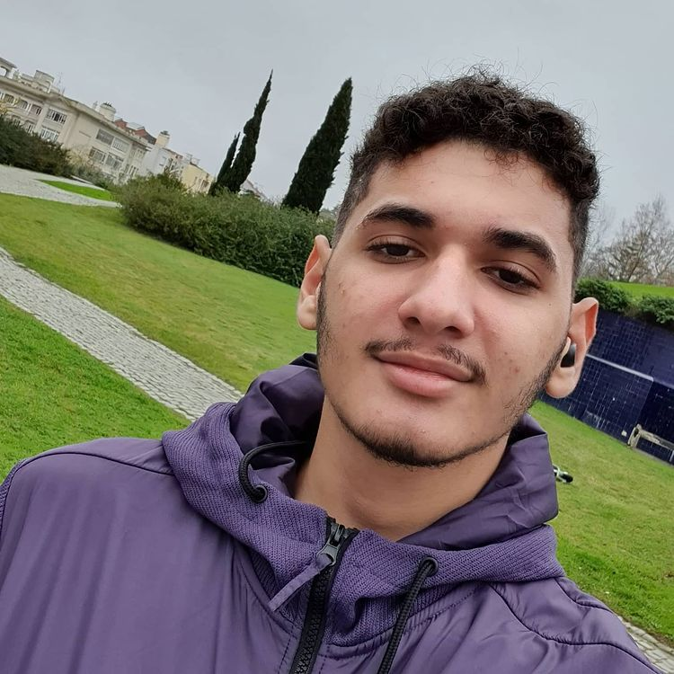

Artigo
O aprendizado em muitos momentos é um processo difícil. Muitas vezes por não conseguir ver a beleza do resultado desistimos pelo cansaço. Porém como tudo na vida o aprendizado é uma escolha, uma escolha que nem todos estão preparados para tomar.
Graças ao bom Deus, depois de enfrentar diversos problemas eu consegui superar a barreira e me dedicar mais uma vez ao aprendizado, neste curso em que sou muito grato por estar participando. Durante esse mês já avancei muito no html e css que eu já tinha estudado e estou sendo capaz de fazer um site como esse.
 
